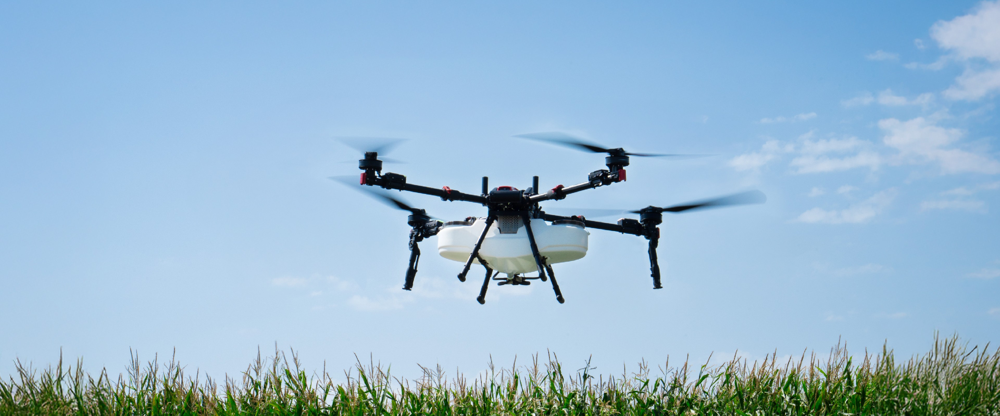
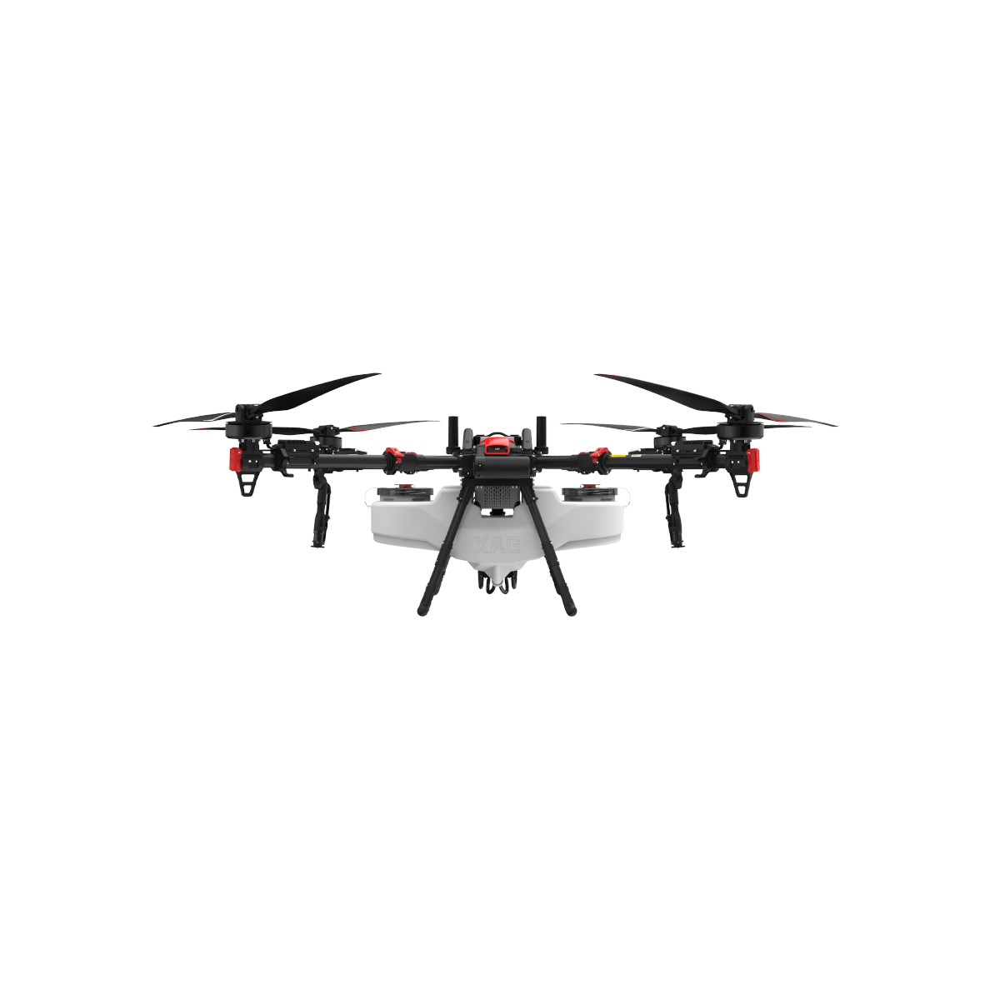
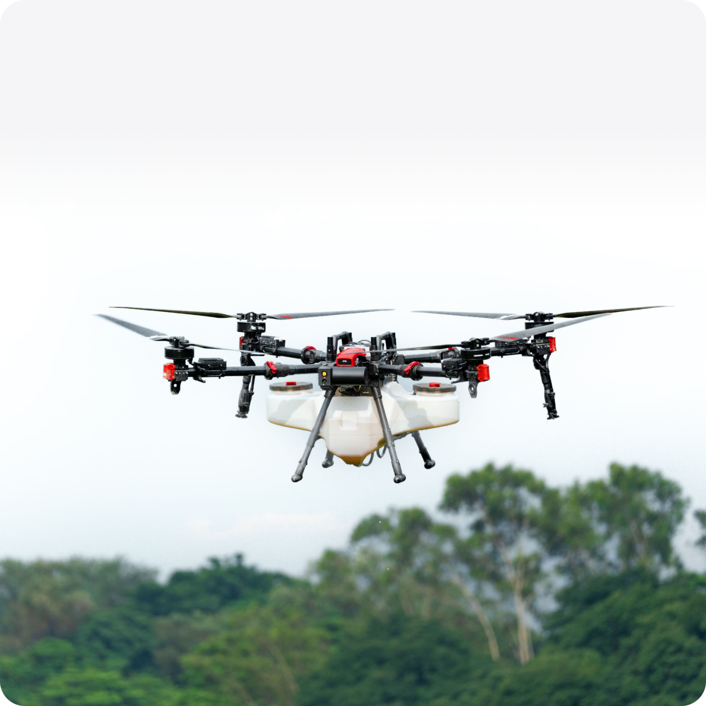
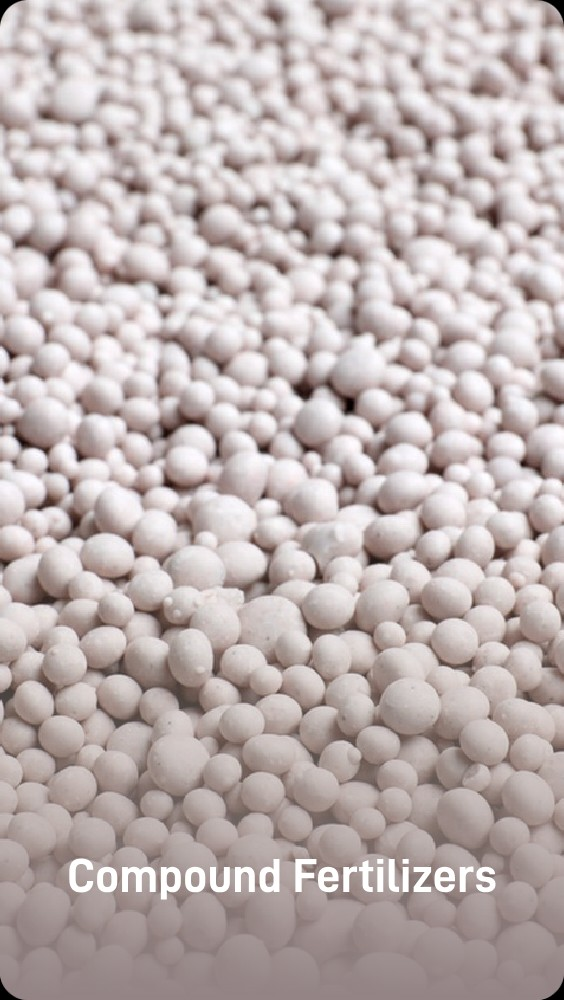

01
Опрыскивание
Внесение средств защиты растений и листовых подкормок над посевами, садами и виноградниками.
Бак 80 л · захват 5–10 м
Рассчитать обработку УСЛУГИ ДЛЯ СЕЛЬСКОГО ХОЗЯЙСТВА
Опрыскиваем посевы, вносим удобрения и семена. Доставляем грузы и снимаем карты полей на XAG P150 MAX.
Без колеи от колёс и уплотнения почвы.

01 / УСЛУГИ
Подбираем модуль и настройки под задачу. Для расчёта нужны площадь, культура и расположение участка.
Внесение средств защиты растений и листовых подкормок над посевами, садами и виноградниками.
Разбрасывание гранулированных удобрений, семян трав, риса, рапса и сидератов.
Перевозка саженцев, удобрений и урожая на склонах и участках без подъездной дороги.
Съёмка границ и рельефа встроенной камерой. Карты помогают подготовить маршрут обработки.
02 / ОБОРУДОВАНИЕ
Одна платформа для жидких растворов, гранул, грузов и съёмки. Рабочий модуль меняется под задачу.

Характеристики зависят от комплектации. Скорость и выработка в поле зависят от культуры, нормы внесения, рельефа и погоды.
Характеристики на сайте XAG03 / ПОРЯДОК РАБОТЫ
До выезда уточняем границы поля, препятствия, источник воды и подъезд к точке запуска.
Площадь, культуру, расположение поля и нужный вид работ.
Уточняем норму внесения, условия участка и стоимость.
Выбираем дату с учётом погоды и готовности хозяйства.
Оператор задаёт маршрут и контролирует обработку.

ПОД ВАШ УЧАСТОК
Разные культуры требуют разных норм внесения. Перед выездом уточняем препарат, рельеф и препятствия — и только после этого готовим маршрут.
Расскажите о своём поле
ВОПРОСЫ
От площади, культуры, вида работ, нормы внесения и удалённости участка. Отправьте эти данные, чтобы получить расчёт для вашего поля.
Дрону не нужно заезжать в поле. При этом время обработки выбирают с учётом ветра, температуры, состояния культуры и требований к препарату.
Препарат и норму согласуют с агрономом хозяйства. Настройки дрона подбирают под согласованную задачу.
Укажите населённый пункт или координаты, площадь в гектарах, культуру и услугу. Если есть карта поля, её можно приложить в переписке.
04 / СВЯЗАТЬСЯ
Укажите услугу, площадь и расположение участка. Подготовим сообщение для WhatsApp, где можно уточнить детали и отправить карту.